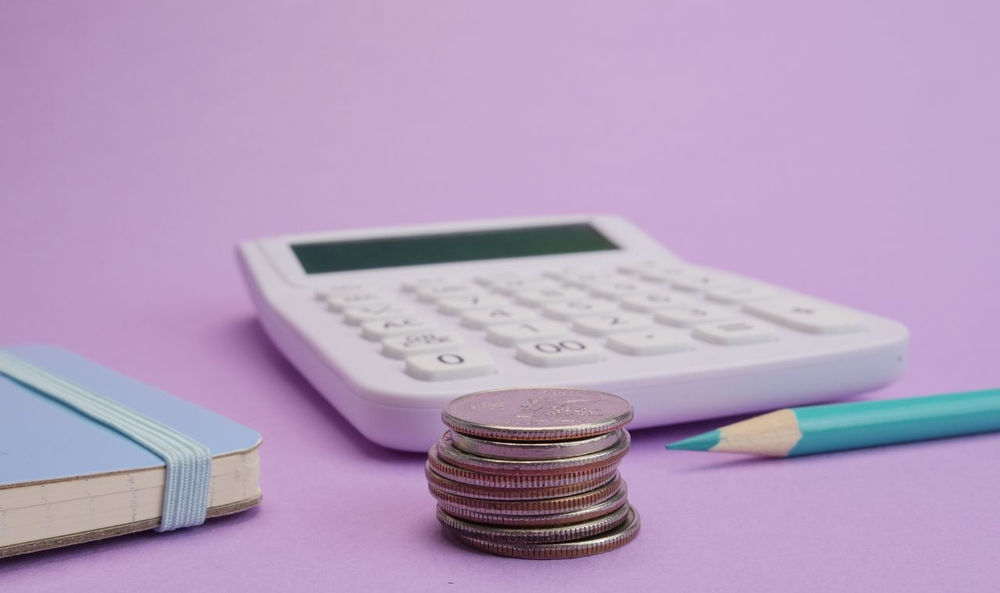

Combien coûte un cours particulier de maths ?
C'est souvent la première question des parents — et c'est légitime. Voici des repères clairs pour 2026, ce qui fait varier les prix, et surtout l'élément que beaucoup oublient : le coût réel, après crédit d'impôt.
À retenir
- Repères : ~25-40 €/h au collège, ~35-55 €/h au lycée.
- Le vrai prix se lit après crédit d'impôt (50 €/h → 25 €/h).
- Comparez le coût réel et exigez toujours l'attestation fiscale.
Les fourchettes habituelles par niveau
En cours particuliers à domicile, le tarif dépend surtout du niveau et de l'expérience / diplôme du professeur. On observe en général :
- Primaire / collège : souvent autour de 25–40 €/h ;
- Lycée (seconde, première) : souvent autour de 30–50 €/h ;
- Terminale, spé maths, prépa bac : souvent autour de 40–60 €/h, le programme étant plus exigeant.
Un professeur très diplômé (Bac+5, profil scientifique) se situe naturellement en haut de fourchette — mais c'est précisément là que le crédit d'impôt rééquilibre tout.
Le vrai prix, c'est le prix après crédit d'impôt
Avec le crédit d'impôt de 50 % sur les cours à domicile, un tarif de 50 €/h revient en réalité à 25 €/h. C'est ce chiffre-là qu'il faut comparer d'une offre à l'autre — pas le tarif affiché.
Pour comprendre en détail le mécanisme (plafond, avance immédiate, attestation), lisez notre guide : le crédit d'impôt de 50 % expliqué.
Ce qui fait varier le prix
- Le diplôme et l'expérience du professeur (un Bac+5 scientifique justifie un tarif plus élevé) ;
- Le niveau de l'élève (terminale > collège) ;
- La zone géographique : l'Île-de-France, dont Versailles, est au-dessus de la moyenne nationale ;
- Le format : domicile (avec crédit d'impôt) ou en ligne ;
- La régularité : un suivi à l'année peut donner lieu à des conditions différentes d'un cours ponctuel.
Attention aux fausses bonnes affaires
Un intervenant non déclaré peut sembler moins cher… jusqu'à ce qu'on intègre le crédit d'impôt : un professeur déclaré à 50 €/h revient à 25 €/h, soit souvent moins qu'un « petit prix » sans avantage fiscal. Sans attestation, pas de remboursement : la comparaison doit toujours se faire coût réel contre coût réel.
Comment juger le bon rapport qualité-prix
Le moins cher n'est pas le plus économique si l'élève ne progresse pas : dix heures inutiles coûtent plus qu'une heure efficace. Regardez plutôt le parcours du professeur, sa capacité à poser un diagnostic, sa régularité, et la fourniture d'une attestation fiscale. Nos critères pour choisir un bon professeur détaillent tout cela.
Questions fréquentes
Quel est le prix moyen d'un cours de maths à domicile ?
Souvent 25 à 40 €/h au collège et 35 à 55 €/h au lycée. Le crédit d'impôt de 50 % divise ensuite ce montant par deux.
Le crédit d'impôt change-t-il vraiment le prix ?
Oui : un tarif de 50 €/h revient à 25 €/h après le crédit d'impôt. C'est ce coût réel qu'il faut comparer.
Le moins cher est-il le plus économique ?
Pas forcément : si l'élève ne progresse pas, des cours bon marché reviennent cher. Diplôme, méthode, régularité et attestation font la différence.
Mes tarifs, en toute transparence
50 €/h, soit 25 €/h après crédit d'impôt — et le premier cours est gratuit. À Versailles et alentours.
Me contacter